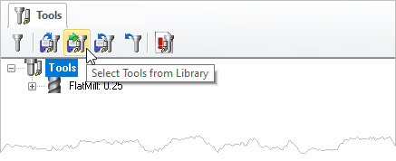
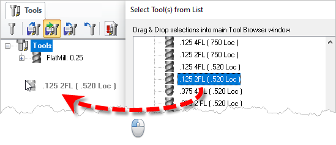
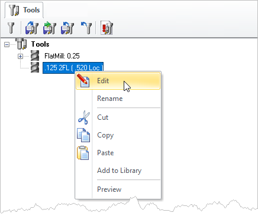

|
<< Click to Display Table of Contents >> Navigation: Profile-NEST Module > Create Machining Operations > Cutting Tools > Select Tool from Library |
This allows you to select tools from a previously saved tool library.
1.From the Tools tab of the Machining Objects Browser, select the Select Tools from Library button .
Note: The actual icons you see in this dialog will depend on what module and what configuration you are currently licensed to operate  From the Tools tab of the Machining Objects Browser, select the Select Tools from Library button. |
2.The list of tools will now be displayed under Select Tools(s) from list dialog and you can drag and drop the tools from the selection list to the cutting tools browser.
 The list of tools will now be displayed under Select Tools(s) from list dialog. |
3.To Edit, Rename, Cut, Copy or Paste on any of these tools, use right mouse button click after selecting the tool under Tools tab.
 Right-click to edit a Tool in your Tool List |